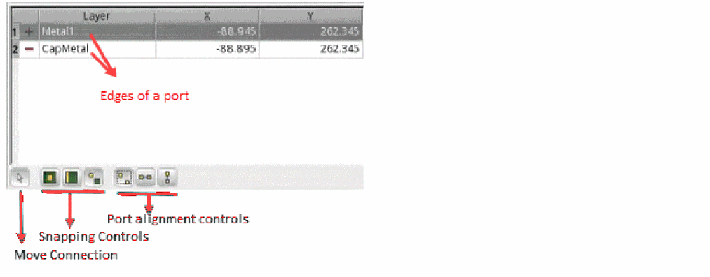

Managing Edges for Ports Created for Clarity Models
To manage the edges for a port:
-
Click the row for that port in the ports table.
Check that the X and Y locations for the positive and negative ends are different, and if the location is same, they are on different layers. - (Optional) Change the layer name in the Layer column to place the ports on other layers.
-
If required, move the coordinates for a port connection by selecting its row and clicking Move Connection at the bottom.
By default, the X and Y coordinates of these connections are set to0.
The Move Connection command displays the controls for port snapping and alignment, as shown below.
The three snapping controls are snap to the center of the shape, snap to the edge of the shape, and no snapping, respectively.
The three controls for alignment adjustment are no alignment, align horizontally (move at the same Y coordinate), and align vertically (move at the same X coordinate), respectively. - Choose a snapping control and an alignment control and move the pointer on the canvas to move the positive or negative edge of the port.
Return to top